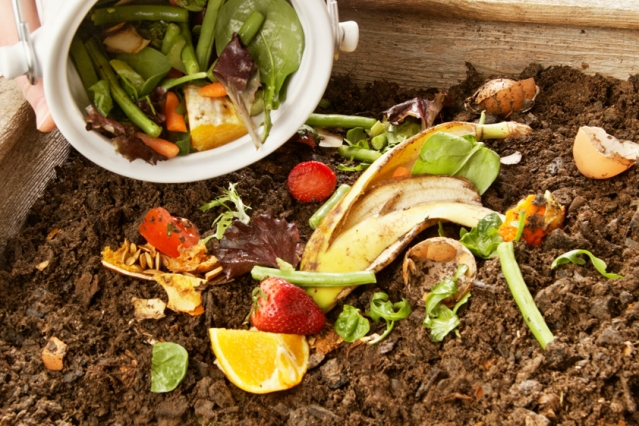

Cara Membuat Pupuk Kompos


Cara Membuat
- Pertama, jangan lupa untuk memotong-motong ukuran sampah organik Anda menjadi lebih kecil. Hal ini dapat
membantu mempercepat proses pengomposan.
- Siapkan alat-alat dan bahan-bahan yang Anda butuhkan. Anda bisa menyiapkan wadah untuk menampung pupuk
kompos tersebut. Pastikan wadah yang Anda gunakan memiliki tutup ya. Selain itu Anda juga perlu
menyiapkan larutan gula dan EM4, sarung tangan, tanah, air, dan juga pupuk kandang untuk membantu proses
pengomposan.
- Cara membuat pupuk kompos pertama adalah masukkan tanah secukupnya ke dalam wadah, kemudian masukkan
pula sampah organik, larutan gula dan EM4, serta pupuk kandang. Kemudian tambahkan kembali tanah untuk
menutupi sampah organik tersebut.
- Setelah memasukkan bahan-bahan tersebut, siram permukaan tanah dengan menggunakan air secukupnya. Lalu
tutuplah wadah tersebut dengan rapat agar proses pengomposan tidak terkontaminasi oleh partikel lain.
Diamkan selama kurang lebih 3 bulan.
- Untuk mempercepat proses pengomposan, Anda bisa mengaduk tanah yang dicampur sampah organik tersebut
dengan rutin. Jika kompos sudah layak panen, Anda akan mendapatkan pupuk kompos berkualitas dari sampah
organik rumah tangga yang Anda hasilkan di rumah.